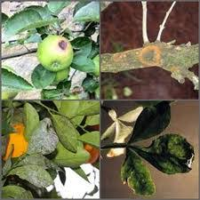
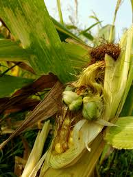

Penyakit citrus vein phloem degeration

Penyakit citrus vein phloem degeration atau sering di sebut dengan CVPD, Nama internasionalnya adalah huanglongbing HLB dari bahasa Tionghoa, Karena luasnya serangan penyakit ini, ia dikenal pula sebagai citrus greening disease, yellow shoot disease, leaf mottle yellows (Filipina), libukin (Taiwan), dan citrus dieback (India). Penyakit ini kerap sekali menyerang suku jeruk-jerukan yang mengakibatkan daun menguning dan bahkan berlubang pada bagian batang tengah daun.
Penyakit mosaic

Jenis penyakit ini sering menyerang tumbuhan tembakau, penyakit ini disebabkan karena adanya virus TMV yang membuat daun tembakau menjadi kuning. Adolf Meyer (1883) menunjukkan pertama kali bahwa gejala mosaik ini dapat menular, seperti penyakit bakteri.
Penyakit ustilago

Penyakit yang banyak sekali di timbulakan oleh jamur. jamur mavdis yang banyak menyerang tumbuhan jagung. Biasanya jamur yang tumbuh menjadi penyakit, yang di pengaruhi kelmbaban yang tidak seimbang atau tidak di kehendaki oleh tanaman.